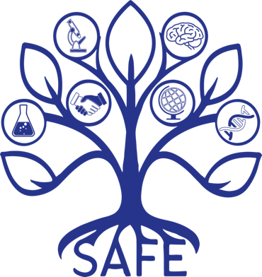

SAFE Policies
IRIBHM Computational labs
Lab policies
We commit to publicly document
Diversity statement
We are a multidisciplinary team of researchers with backgrounds in computer science, mathematics, biology and medicine. We value this diversity in thought, and furthermore we strive to create an environment that is diverse in cultural, socio-economic, gender and geographical backgrounds.
Accordingly, we strive for a psychologically safe environment, where differing points of view are valued. We look out for the mental health of our team and discourage toxic and discriminatory behavior. At onboarding, we review the institutional rules for parental leave and discuss any other needs. To facilitate these goals, we implement the SAFE handbook.

Mandatory viewing for new members:
- https://www.youtube.com/watch?v=kGd8seSSQH8 (3min)
- UNIA online course (Belgium-focused, only Dutch or French): https://www.unia.be/en/knowledge-recommendations/ediv
- Register to follow the Anti-Discrimination Law Module: https://www.ediv.be/theme/unia2019/modules.php (1h 30min)
- https://www.unia.be/en/understanding-discrimination (5 min read)
Some useful links for (future) parents:
- Parental leave as recipient of FNRS grant:
https://www.frs-fnrs.be/docs/Reglement-et-documents/Dispositions-maternite-naissance-parentalite.pdf - Parental leave as ULB employee:
https://portail.ulb.be/fr/emploi-et-carriere/conges-absences-et-temps-de-travail/enfants - Daycare on campus:
https://portail.ulb.be/fr/aides-bien-etre-et-avantages/enfants/creches/creches-au-solbosch-et-a-erasme
Green initiatives and sustainability
Before making travel plans, we encourage lab members to consult the ULB’s incentive programs for green travel. For conferences attended as a group, we typically make a group purchase.
We encourage lab members to take advantage of the ULB’s incentives for sustainable commuting (e.g. cycling and public transport). Recipients of FNRS grants can also receive compensation, information can be found under the HR documents section.
Regarding lab equipment, there are institute-wide internal rules and guidelines to follow. Typically, we encourage members to reuse, share and donate equipment when possible. For this purpose, the institute-wide mailing list can be used.
Common lab language
The working language in the lab is English. All meetings and work-related conversations should be conducted in English. For interpersonal conversations, we encourage to use the language most inclusive to those present.
The ULB’s working language is French. While some documentation and communication from the institution is bilingual (French and English), oftentimes resources are only available in French. We encourage lab members to use a translation plugin on their browser to deal with this, and in case of confusion we are there to help. It is important to note that mastery of the French language is expected for promotion to fully tenured professor at the ULB, and that internal meetings such as faculty meetings can be conducted fully in French.
If you want to improve your language skills, a variety of programs are available organized by ULB Langues. The Brussels region also maintains a list of the many language schools in the city.
We allow the use of AI-based services like ChatGPT or Grammarly to improve the quality of writing, however, fully AI generated text is not acceptable. It is also important to always verify whether the output is still correct, since large language models can give factually incorrect output.
We commit to document
The procedure for reporting bullying and/or harassment
The procedures for employees can be found on the ULB staff platform. The CARE team (formerly CASH-E), intended for bachelor and master students can also help navigate such cases. Information for reporting harassment in Belgium in general can be found here.
Available resources to support mental health
The ULB has different mental health services. Staff members can get counseling through SSM (the website is only in French, but there is English speaking staff).In case of accessibility needs, the ULB staff page has information.
You can find help outside of the ULB as well. For medical help, you can contact your personal health insurance. The Platforme Bruxelloise pour la santé mentale can be consulted for various issues such as drug addiction, immigration issues and psychological trauma. There is also a Flemish equivalent active in Brussels called the CAW.
The procedure for raising lab or interpersonal issues
The first, and easiest, course of action is to attempt to talk it out with the person involved. If the issue persists, it can be brought up privately to your PI or, if applicable (e.g. a conflict with your PI), to a member of your PhD thesis committee. If all else fails, the resources of the ULB can be used (see “The procedure for reporting bullying and/or harassment”)
We commit to establish
Shared lab calendar
We share dates for e.g. lab meetings, conferences, and personal vacations in the calendar “GRP_IRIBHM Computational”. We expect some notice for announcing personal vacations. A rough guideline is one week notice at least, and a longer notice period if you will be away for a long time. You should plan out your vacation days to not interfere with your and other’s work, for example, not at the same time as an important conference or an important deadline. Or if you have running wet lab experiments, they should not be affected. Extended working from home periods should also be marked on the calendar. If you are unavailable due to a medical issue, you should (if you are able) mark yourself as “absent” on the calendar, a justification to the whole team is not needed.
SAFE Guidelines: SAFE Teams
What are the “core” working hours?
Working hours are 9am to 5pm, but are flexible within reasonable limits. Some of the secretary work starts earlier. Some meetings (e.g. with North-American collaborators) might end later. Lab members should not expect replies to non-urgent emails/messages outside of work hours.
Since individual preferences vary, we do expect lab members to be flexible with these hours when scheduling their own time. The “core” hours, around which flexibility is accepted, are 10am to 4pm. We expect lab members to be considerate of the core hours when scheduling meetings, or training, while maintaining flexibility when possible.
Full lab members should be onsite during the core working hours from Tuesday to Friday (also see next section on remote working). This helps to ensure we regularly interact in-person and benefit from the expertise and community provided by working in a research group. This is a requirement for every week and it should be the norm.
How many days/week do we work remotely? Do we support extended remote work for specific conditions?
Full-time lab members can opt to work remotely for one day per week maximum, when their work does not require presence in the lab.
In general, we believe that regular onsite presence is crucial, also for the dry lab. However, we will support extended remote working in exceptional cases, which should be discussed at least three months in advance with the PIs or as soon as foreseeable.
Do you support time-off if experiments/conference are done outside of working days/hours? How many days of vacation can we have? Should we keep track of it?
The number of vacation days for lab members is defined individually in their respective contract. The minimum vacation days in Belgium is 20 days per year. The number of bank holidays is 10 days per year. There are extra institutional days off. Typical total number of days off at our institute is 31 days.
If a public holiday falls on a Sunday, employees are entitled to an extra day off, typically taken on the nearest working day. Similarly, some experiments or conferences might overlap with weekend days, which can be compensated for during the week.
We encourage members to inform the team of their holidays on a shared calendar, with reasonable notice and using good judgment with regards to timing.
Regular meetings in the lab
Lab meetings
Lab meetings are held weekly on Thursdays at 10 AM, unless otherwise announced. Each meeting follows this structure:
- Presentation: A different lab member presents their work or results for 30–40 minutes.
- Round Table Discussion: Every lab member has up to 5 minutes to share updates on their projects, discuss challenges, or seek feedback.
Any changes to the schedule will be communicated in advance.
Journal Club
The Journal Club takes place once a month and provides an opportunity for collaborative learning and discussion.
- Team Selection: Groups of 3–4 members are formed to choose a paper for presentation.
- Paper Approval: The selected paper must be relevant to the lab's research and approved by the PI before the meeting.
- Presentation: During the session, the group presents the paper to the lab, highlighting key findings, methodologies, and implications, followed by a group discussion.
One-2-One meetings
One-to-one meetings are organized by the supervisors and scheduled based on mutual agreement and availability. These meetings provide a flexible opportunity to discuss specific projects, address challenges, or receive personalized guidance. The frequency and timing depend on the needs and preferences of both the supervisor and the lab member.
How equal ressources are maintained in the lab?
The lab is committed to ensuring fair and equitable access to all resources, including equipment, workspace, and materials, for all members. Lab schedules and bookings are managed transparently through a shared calendar or booking system to prevent conflicts and ensure everyone has equal opportunity to utilize resources. Priority may be given based on project deadlines or experimental requirements, but such decisions will be made collaboratively and with fairness in mind. All members are encouraged to communicate their needs clearly and early to maintain a respectful and inclusive working environment.
ROLES AND TRAINING
Required: Y = Yes; W = Yes for wetlab; N = No; O = Optional; —------ = NA.
Tasks | PI | PostDoc | PhD | MSc/Internship |
|---|---|---|---|---|
Supervision | not applicable | not applicable | not applicable | not applicable |
Supervised by | not applicable | PI | PostDoc/PI | All |
Supervising | All | PhD/MSc/Intern | MSc/Intern | not applicable |
Research | not applicable | not applicable | not applicable | not applicable |
Independent Project | Y | Y | Y | N |
Paper writing | Y | Y | Y | N |
Experimental Work | N | Y | Y | Y |
Conference Presentation | Y | Y | Y | O |
Funding | not applicable | not applicable | not applicable | not applicable |
Applications | Y | O | N | N |
Help PI grants | Y | Y | Y | O |
Lab citizenship | not applicable | not applicable | not applicable | not applicable |
Workshop | N | Y | Y | O |
Journal Club | N | Y | Y | O |
Lab Meeting | N | Y | Y | Y |
Paper Review | Y | Y | O | N |
Housekeeping | not applicable | not applicable | not applicable | not applicable |
Orders | N | Y | Y | N |
Animal Colony | N | W | W | N |
We commit to establish
- An annual lab feedback
- Takes place during our yearly lab retreat at the end of the year, in the Fall. This dedicated time is used to reflect on and discuss major topics impacting the lab.
- Dedicated one-2-one meeting annually: Each lab member has (at least) one yearly feedback session with the supervisor. These meetings are an opportunity for two-way feedback and focused discussions on career development.
SAFE Guidelines: SAFE CAREERS
We commit to publicly document
Which contributions constitute authorship on a scientific paper.
Typically all contributors to a paper are included as authors, where contribution is broadly defined by CRediT Taxonomy. For example, developing a new technique for a project, or contributing previously unpublished data/figures would constitute authorship. Conversely, routine experimental work, sharing basic analysis code, or proof-reading a paper would not constitute authorship and might be acknowledged in the acknowledgements section.
Relative contribution in the authorship list is ultimately decided in discussions between the group leader, project lead(s), and any other potential authors. Since the scientific process is unpredictable, authorship will be discussed at the end of the project.
Whenever possible, we publish a matrix of contributions at the end of each paper.
Ambitions for the duration and publication outputs for each lab role.
Every PhD and postdoctoral researcher position in the lab inevitably has its own set of experimental challenges and funding complications. Therefore, it is impossible to predict the outcome of any project, and impossible to make guarantees with respect to timelines or publications. However, our ambition for each role is as follows:
PhD students typically graduate approximately 4-5 years after joining the lab, with the goal that each student has at least one first (or co-first) authored article published or at least on bioRxiv by that time. PhD projects are selected in consultation with the student to align with this aim. Depending on the current funding status of the lab, it is often possible for students to remain in the lab for a period after completing their PhD, with discussions about this occurring at least one year prior to graduation.
Postdoctoral researchers generally join the lab with an initial contract, the length of which depends on the funding source and the proposed project. All positions are subject to a 12-month probationary period. Restrictions will be clearly communicated in the initial job advertisement and during discussions with applicants. Projects will be proposed in collaboration with the researcher to maximize the chances of publication within the initial contract timeframe. At least one year before the end of the contract, the next steps will be discussed with the researcher, which may include options to extend their time in the lab, either with or without applying for their own funding.
Expectations and funding for conference/summer school attendance.
All lab members are encouraged to seek and apply for training opportunities to develop new expertise. Attendance and dissemination of the lab research at conferences is highly valued.
Each postdoctoral researcher and PhD student typically has a budget to attend conferences every year, the amount of which depends on the funding scheme. For those full lab members without funding for conferences, the lab will try and cover their costs on a case-by-case basis to be discussed with the supervisors.
Lab members are expected to submit an abstract when attending events (where applicable), at least for a poster, ideally for oral presentations.
Typically, both PhD students and postdoctoral researchers are expected to attend at least one scientific event every year. Support will be provided for applications (e.g., recommendation letters) to these initiatives if needed. When funds are available from the lab, the lab can cover extra costs if needed.
Master’s students, undergraduates, and lab technicians are also encouraged to attend conferences if they have work to present. Discussions about these opportunities should occur in advance of the abstract submission deadline.
Guidelines for completing previous work after joining the lab.
Postdoctoral researchers joining the lab may have ongoing work from their previous position, and it is important to support them in completing this work. The duration for finishing previous work can be difficult to predict, but ideally, it should not extend beyond one year. If the completion of prior work is expected to take longer than one year, it is advisable for postdoctoral researchers to delay the start of their position in the lab whenever possible. Additionally, time spent on previous work should be significantly less than time spent on lab work during that year.
The process for funding postdoctoral researchers.
At ULB, similarly to FNRS, salaries for postdoctoral researchers are determined by a national scale system and will scale with seniority (scale 530 + seniority, multiplied by current index for salaries - index also found here). Nevertheless, some fellowships can be higher.
All postdoctoral researchers are required to apply for fellowships, both to benefit their own career and to improve lab finances. However, being awarded a fellowship is not a requirement. In cases when a researcher acquires their own funding through a competitive fellowship, this can come with an increased salary. It may also come with dedicated funding for a lab technician to be managed by the researcher.
Transparency will be maintained regarding the available funding for their position when joining the lab, and discussions will cover any relevant details.
Joining ULB for international applicants.
The ULB has documentation for international researchers and PhD students joining the University. We will engage with the ULB admin and help guide international applicants in the process.
We commit to publicly document
The procedure for requesting reference letters.
Reference letters will be provided to lab members at request, but these requests should be made at least 2 weeks in advance of the deadline for the first reference letter, and at least 1 week in advance for subsequent letters. Lab members should expect fair and honest evaluation of their performance and skills in the reference letters provided. As a rule, any additional supervisors that are still active lab members (for example, a postdoctoral researcher who has supervised a student) will be invited to contribute and sign the requested reference letter.
The procedure for leaving the lab, including an exit interview.
Mentorship and support are provided to lab members to help secure the next career step. Job and grant applications, along with preparation for subsequent interviews, require significant time and effort, up to one year before the end of the contract. Typically, after mutual agreement during one-on-one meetings, up to 25% of work time may be dedicated to this endeavor.
Recognizing that individuals may leave the lab for various reasons, it is important to discuss plans as early as possible—preferably at least six months before the intended departure. This approach helps ensure a smooth transition, with the final months focused on the handover of any necessary knowledge and data to maintain documentation, continuity, and completion of ongoing projects. As a final step before departure, an exit interview will be organized, conducted privately with a colleague (e.g., a SAFE lab network associate). This interview provides departing lab members an opportunity to discuss their reasons for leaving and offer constructive feedback based on their experiences.
We commit to establish
Annual lab-wide meetings to review training and outcomes for “core skills”.
Details: Researchers often focus on scientific progress and neglect the development of core skills, including team management, giving/receiving feedback, writing, presentations etc. An annual meeting for lab members, including the group leader, to discuss their efforts toward improving these skills not only normalizes the process, but also alerts other lab members of potential opportunities.
A dedicated session during our annual lab retreat will cover training and outcomes of core skills.
A mechanism for sharing lab management updates.
Details: Some lab members will consider academia as a potential career. Understanding how the group leader runs the lab, the responsibilities they have, and the process of funding a research team can be beneficial. However, lab members are typically shielded from most of this information. To improve transparency, and give lab members a greater insight into academic careers, group leaders should ideally regularly communicate details of lab management.
We will give updates on project writing, spending/grants, and lab recruitment during lab meetings.
An objective and equitable interview process.
Details: The decision to recruit an applicant should depend on clear selection criteria to help avoid personal biases and to treat all applicants fairly. Some of the suggestions below may be impractical or impossible given institutional constraints, but group leaders should implement as many as possible.
We will interview candidates with 2 PIs whenever possible. The same procedure and a predefined set of questions is used for all candidates.
Some example interview questions might be:
Skills & motivation:
-Among your skills, which is most important to this project?
-You are applying to work on project X, where do you think this project could take us?
-You have mentioned experience with technique Y, can you briefly explain how it works?
-Can you tell us about a time when you had to solve a problem on your own?
-This project is focused on question X, what do you know about the current state of the field?
-Are you aware of any other lab working on similar/related topics?
-What is your career plan for the next 10 years?
-What motivates you to work in science?
-Which specific training are you hoping to gain by joining our lab?
Core skills & communication:
-Can you briefly explain your latest discovery to someone without a scientific background?
-What strategies do you use to keep yourself organised?
-Give an example of a creative solution you used to to solve a problem (at or outside work)?
-How would you set priorities if you spread too thin and struggling to meet deadlines?
-You need to learn a new method (to the lab), how do you approach the problem?
-Can you give an example of a situation when you had to act like a leader?
-Could you provide an example of a situation that would highlight your organisational skills?
Lab attitude (precision, thoroughness, ethics, attention to SAFE):
-What strategies do you use to ensure reproducibility in your results?
-What strategy do you use to store/archive data?
-How do you keep your code organised?
-If you realised you made an error at your work, how would you handle it?
-You suspect you’ve made an error in a procedure, how do confirm/refute this suspicion?
-Are you familiar with the concept of 3R's? Can you briefly explain them?
-Your believe your project overlaps with another lab member, how do you deal with this?
-What would you do if you realised a colleague was mis-conducting their research?